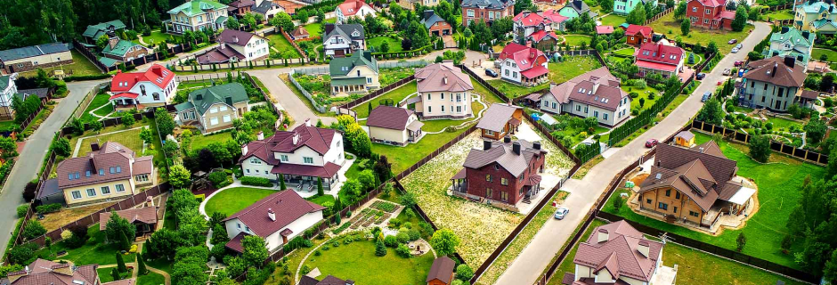
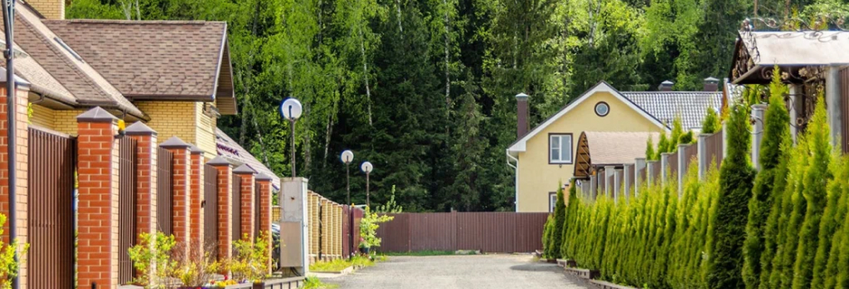
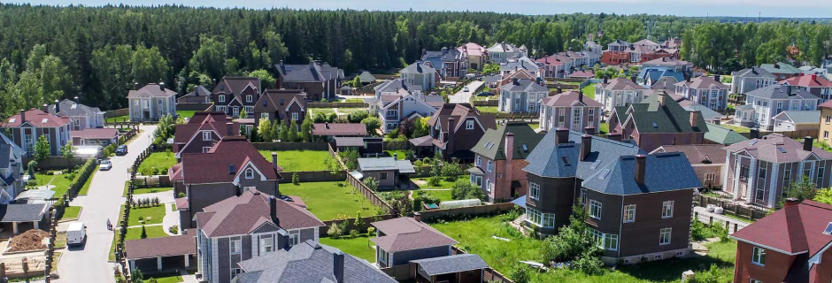
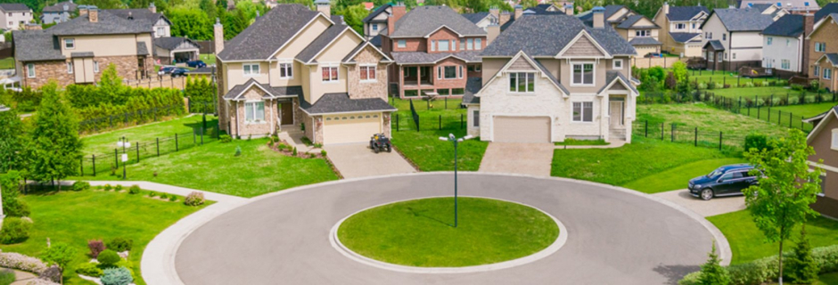

В поисках своего участка: Руководство по выбору земельных участков в Московской области
Введение: Где начать поиск?
Давайте отправимся в захватывающее путешествие по земельным участкам в Московской области. Здесь, среди живописных природных ландшафтов и современного развития, каждый может найти свой уголок под солнцем. В этой статье я расскажу вам, как правильно подобрать свой будущий участок и сделать этот выбор осознанным.
Первый вопрос, который возникает при планировании приобретения участка, - где начать поиск? Ответ прост: интернет. В последние годы он стал настоящим информационным космосом, и рынок недвижимости не исключение. Популярные ресурсы, такие как ЦИАН, Авито и Яндекс.Недвижимость, предоставляют обширную базу данных земельных участков в Московской области.
Разбор территории
Прежде чем приступить к поиску земельного участка, необходимо внимательно изучить различные районы Московской области. Каждый из них обладает своими уникальными особенностями, которые могут влиять на ваш выбор. Давайте рассмотрим несколько ключевых районов:
Зеленоградский район
Этот район является идеальным выбором для тех, кто ценит современный стиль жизни и развитую инфраструктуру. Зеленоград известен своей ухоженной территорией, множеством парков и зелёных зон. Здесь вы найдете современные жилые комплексы, школы, детские сады и спортивные площадки. Благоприятная экология и высокий уровень безопасности делают этот район привлекательным для семей с детьми.
Раменский район
Раменский район привлекает своей природной красотой и уединением. Если вам по душе тихая загородная жизнь, окруженная лесами и озерами, то этот район может быть вашим идеальным выбором. Здесь вы сможете наслаждаться свежим воздухом, долгими прогулками по лесам и рыбалкой на многочисленных водоемах. К тому же, Раменский район предлагает разнообразные варианты для строительства дома с соблюдением всех современных стандартов.
Подольский район
Для любителей истории и традиций подойдет Подольский район. Здесь вы найдете уютные деревенские поселения, сохранившие свой характер и атмосферу старины. Рядом с историческими достопримечательностями также сосредоточены современные удобства, создавая идеальное сочетание прошлого и будущего. Подольский район подходит для тех, кто ценит аутентичность и хочет прочувствовать дух старины, не отказываясь от современных удобств.
Рассмотрите особенности каждого района, взвесьте плюсы и минусы, и только затем приступайте к поиску конкретного участка. Такой подход поможет вам найти идеальное место под солнцем, соответствующее всем вашим ожиданиям.
Юридические тонкости
Выбрав интересующий вас район, наступает важный этап - проверка юридической чистоты земельного участка. Это обеспечит вас дополнительным уровнем защиты от потенциальных правовых сложностей в будущем. Вот несколько ключевых моментов, на которые стоит обратить внимание:
Документы на землю
Перед тем как заключить сделку, удостоверьтесь, что продавец обладает всеми необходимыми документами на землю. Это включает в себя свидетельство о праве собственности, кадастровый паспорт и другие документы, подтверждающие его право на продажу. Осмотрите эти документы и убедитесь, что они находятся в правильном порядке.
Зонирование и разрешения
Один из важных аспектов приобретения земельного участка - соответствие его назначения вашим планам. Проверьте зонирование участка в соответствии с местными законами и строительными нормами. Уточните, какие строительные разрешения можно получить для данного участка. Это крайне важно, чтобы избежать непредвиденных сложностей при строительстве.
История собственности и обременения
Проанализируйте историю собственности участка. Это важно для выявления возможных проблем, таких как обременения или наличие иных прав третьих лиц на участке. Такие обстоятельства могут затруднить передачу прав собственности на вас.
Налоговые обязательства
Уточните налоговые обязательства, связанные с приобретением и владением участка. Это включает в себя налоги на землю и возможные другие обязательные платежи. Будьте в курсе текущих ставок и сроков уплаты, чтобы избежать финансовых неудобств в будущем.
Если у вас возникают сомнения или вопросы, лучше всего проконсультироваться с юристом, специализирующимся на недвижимости. Такой подход обеспечит вам уверенность в вашем выборе и защитит от нежелательных юридических последствий.
Инфраструктура и коммуникации
Выбор земельного участка в Московской области не ограничится только его природной красотой. Важным фактором является также развитая инфраструктура и наличие необходимых коммуникаций. Рассмотрим ключевые пункты, которые следует учесть:
Транспортная доступность
Оцените близость к транспортным магистралям и общественному транспорту. Это важно для удобства передвижения и экономии времени при поездках в город или другие населенные пункты. Разберемся подробнее:
- Близость к автомагистралям: Участок, находящийся вблизи крупных автотрасс, обеспечит удобный доступ и ускорит перемещение.
- Общественный транспорт: Наличие остановок общественного транспорта вблизи участка значительно облегчит коммуникацию для тех, кто не пользуется личным транспортом.
Близость к инфраструктуре
Оцените доступность ключевых объектов инфраструктуры:
- Магазины и торговые центры: Близость к магазинам и торговым центрам обеспечит удобство при покупках и позволит быстро удовлетворить повседневные потребности.
- Учебные заведения: Если у вас есть дети или планируется их появление, важно удостовериться в наличии школ и детских садов вблизи.
- Медицинские учреждения: Близость к больницам и поликлиникам обеспечит быстрый доступ к медицинской помощи.
Коммуникации
Удостоверьтесь, что на участке доступны необходимые коммуникации:
- Водоснабжение: Проверьте возможность подключения к системе водоснабжения или наличие скважины на участке.
- Электроэнергия: Уточните, какова доступность электросети. Это важно для строительства и комфортного проживания.
- Газоснабжение: Если вы планируете строить жилье, убедитесь в возможности подключения к газоснабжению.
- Интернет и связь: Наличие высокоскоростного интернета и хорошей мобильной связи сделает ваше пребывание на участке более комфортным.
Выбор земельного участка в Московской области - это ответственный и волнующий процесс. Следуя нашему руководству, вы сможете сделать осознанный выбор, который подарит вам не только кусочек земли, но и настоящий дом. Помните, каждый участок - это уникальная история, и вам предстоит написать свою. Удачи в поиске вашего идеального уголка!